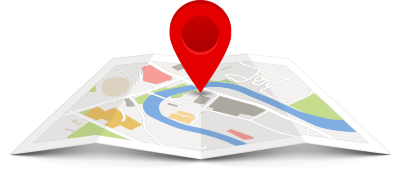

<!--
  Generated template for the IntroPage page.

  See http://ionicframework.com/docs/components/#navigation for more info on
  Ionic pages and navigation.
-->
<ion-header>

  <ion-navbar align-title="center">
    <ion-title>Know Your Location</ion-title>
  </ion-navbar>

</ion-header>

<ion-content class="login-background" padding>
<br>
  <!--  -->
  <button ion-button color="btn" (click)="openclient()" class="special">
      <div style="color: red;">
        Where am I?
      </div>
    </button>
    <br><br><br>


</ion-content>
